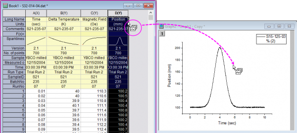
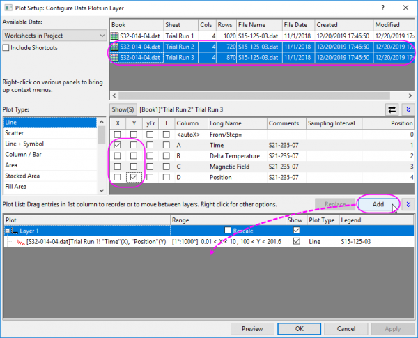
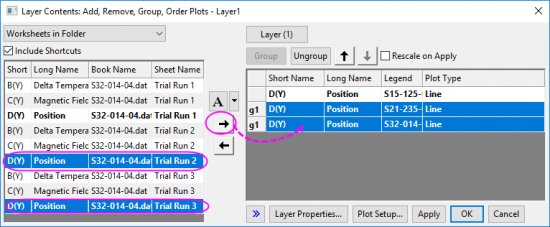
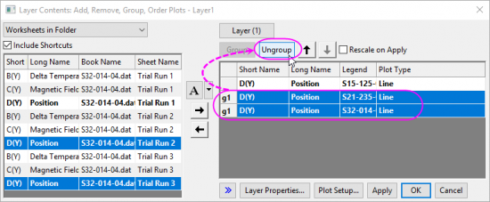
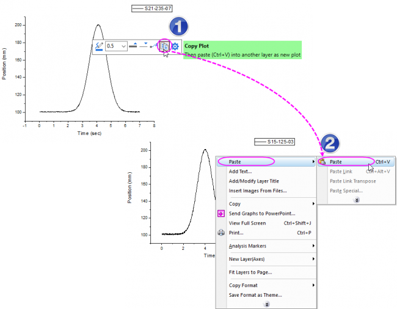
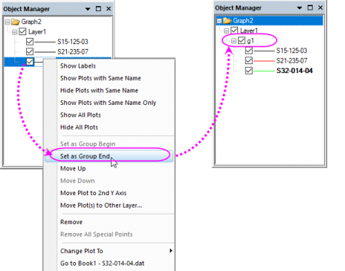
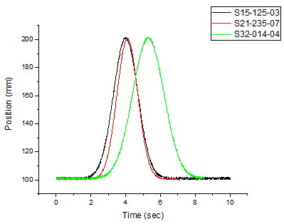

Ein Diagramm zu einem existierenden Diagramm hinzufügen
Adding-Plot
Zusammenfassung
Es kann vorkommen, dass Sie, wenn Sie einen Datensatz in einen Diagrammlayer gezeichnet haben, einen weiteren Datensatz in den gleichen Diagrammlayer zeichnen möchten.
Für diesen Fall stehen Ihnen vier Methoden zur Verfügung:
-
Datensatz per Drag&Drop in den Diagrammlayer ziehen
- Sie können Daten per Drag&Drop zu einer Grafik hinzufügen. Wenn Sie diese Methode verwenden, legt Origin bei Erstellung des Diagramms die Diagrammzuordnung der Arbeitsblattspalten zugrunde.
- Sie können den Dialog Diagrammeinstellungen verwenden, um die Zeichnung hinzuzufügen.
- Der Dialog Diagrammeinstellungen kann verwendet werden, um Diagramme in einem existierenden Diagramm hinzuzufügen/neu zu ordnen/anzuordnen. Dieser Dialog bietet Flexibilität beim Auswählen des Quelldatenblatts und dem Festlegen, welche Daten gezeichnet werden sollen.
- Sie können den Dialog Layerinhalt verwenden, um die Zeichnung hinzuzufügen.
- Der Dialog Layerinhalt wird verwendet, um Datenzeichnungen zu bzw. aus einem Diagrammlayer oder einer Gruppe hinzuzufügen bzw. zu entfernen und die Datenzeichnungen neuzuordnen (Reihenfolge zum Zeichnen der Datensätze ändern).
- Verwenden Sie die Schaltfläche Zeichnung kopieren in der Minisymbolleiste, um eine existierende Zeichnung in den Diagrammlayer einzufügen.
- Seit Origin 2020 können Sie die Schaltfläche Zeichnung kopieren auf der Minisymbolleiste verwenden, um eine Zeichnung aus einer Grafik zu kopieren und diese Zeichnung in einem anderen Diagrammlayer einzufügen. Auf diese Weise können Sie eine existierende Zeichnung zu einem anderen existierenden Diagrammlayer hinzufügen.
Was Sie lernen werden
Dieses Tutorial zeigt Ihnen, wie Sie:
- Per Drag&Drop Daten zu einem Diagrammlayer hinzufügen
- Den Dialog Diagrammeinstellungen verwenden, um Daten zu einem Diagrammlayer hinzuzufügen
- Den Dialog Layerinhalt verwenden, um Daten zu einem Diagrammlayer hinzuzufügen
- Eine Minisymbolleiste verwenden, um eine Zeichnung zu kopieren und in einen Diagrammlayer einzufügen
- Zeichnungen in der Objektverwaltung gruppieren
- Den Dialog Legende aktualisieren verwenden, um die Diagrammlegende zu modifizieren
Schritte
Daten eingeben und zeichnen
- Klicken Sie auf die Schaltfläche Neues Diagramm in der Symbolleiste Standard, um ein neues Diagrammfenster zu öffnen.
- Klicken Sie auf die Schaltfläche Importassistent in der Symbolleiste Standard. Der Importassistent wird geöffnet. (Beachten Sie, dass es, sollten Sie den Importassistenten zum ersten Mal gestartet haben, zu einer kleinen Verzögerung kommt, da Origin die erforderlichen Dateien kompiliert.)
- Überprüfen Sie, dass die Option ASCII in der Gruppe Datentyp ausgewählt ist.
- Klicken Sie auf die Schaltfläche Durchsuchen rechts neben dem Textfeld Datei. Gehen Sie zum Origin-Ordner, navigieren Sie zum Ordner Samples und suchen Sie den Ordner Import and Export.
- Drücken Sie die Strg-Taste und wählen Sie die Dateien S15-125-03.dat, S21-235-07.dat und S32-014-04.dat. Klicken Sie dann auf Dateien hinzufügen.
- Klicken Sie auf OK.
- Belassen Sie Importfilter für aktuellen Datentyp auf Datenordner: VarsFromFileNameAndHeader. (Dieser Filter verfügt über Einstellungen, die beim Importieren von Dateien verwendet werden.)
- Stellen Sie den Importmodus auf Neues Blatt öffnen.
- Klicken Sie auf die Schaltfläche Fertigstellen. Die drei Datendateien werden in die Arbeitsmappe importiert, jede als ein neues Blatt. Sie haben eine Mappe mit drei Blättern: Trial Run 1, Trial Run 2 und Trial Run 3.
- Markieren Sie das Blatt Trial Run 1 und markieren Sie die Spalte D(Y). Klicken Sie auf die Schaltfläche Liniendiagramm auf der Symbolleiste 2D Grafiken. Ein neues Diagramm wird erstellt. Es erhält den Namen Graph1.
Diagramm hinzufügen
Mittels Drag&Drop
- Klicken Sie mit der rechten Maustaste auf die Titelleiste von Graph1 und wählen Sie Duplizieren im Kontextmenü, um das Diagrammfenster (Graph1) zu duplizieren.
- Aktivieren Sie dieses neue Diagrammfenster und verschieben Sie es zur grauen Fläche im Origin-Arbeitsbereich (es sollte nicht von der Quellarbeitsmappe bedeckt sein).
- Klicken Sie, um das zweite Blatt "Trial Run 2" der Quellarbeitsmappe auszuwählen, und klicken Sie dann auf den Spaltenheader von col(D), um diese Spalte zu markieren. Verschieben Sie den Cursor an die rechte Kante von Spalte col(D), bis das Symbol für Drag&Drop
 angezeigt wird.
angezeigt wird.
- Sie können die Spalte dann per Drag&Drop in das Diagrammfenster ziehen.
- 
- Eine neue Kurve wird in die Grafik eingefügt.
- Klicken Sie, um das dritte Blatt "Trial Run 3" der Quellarbeitsmappe auszuwählen, markieren Sie die Spalte col(D) und ziehen Sie sie per Drag&Drop in das Diagrammfenster, um eine weitere Kurve in den Diagrammlayer einzufügen.
- Jetzt haben Sie eine Grafik mit drei Kurven im Layer.
|
Alternativ:
Sie können die Schaltfläche Zum Zeichnen kopieren auf der Minisymbolleiste verwenden, um die Zeichnung in Schritt 3 und 4 hinzuzufügen. Dazu:
- Klicken Sie, um das zweite Blatt "Trial Run 2" der Quellarbeitsmappe auszuwählen, und klicken Sie dann auf den Spaltenheader von col(D), um diese Spalte zu markieren. Klicken Sie auf die Schaltfläche Zum Zeichnen kopieren
 auf der Minisymbolleiste, die angezeigt wird. auf der Minisymbolleiste, die angezeigt wird.
- Aktivieren Sie das Diagrammfenster. Klicken Sie mit der rechten Maustaste auf den weißen Bereich im Layer und wählen Sie Einfügen: Einfügen im Kontextmenü.
|
Mittels Diagrammeinstellungen
- Klicken Sie mit der rechten Maustaste auf die Titelleiste von Graph1 und wählen Sie Duplizieren im Kontextmenü, um das Diagrammfenster (Graph1) zu duplizieren.
- Aktivieren Sie das neue Diagrammfenster, klicken Sie mit der rechten Maustaste auf das Symbol von Layer 1 in der oberen linken Ecke des Diagramms und wählen Sie Setup Diagramm.
-
|
Es gibt drei Bedienfelder im Dialog Diagrammeinstellungen. Erweitern Sie das Bedienfeld Diagrammtyp, indem Sie auf  klicken. Erweitern Sie dann das Bedienfeld Verfügbare Daten, indem Sie auf die zweite Schaltfläche klicken. klicken. Erweitern Sie dann das Bedienfeld Verfügbare Daten, indem Sie auf die zweite Schaltfläche klicken.
Bitte lesen Sie unter Mit Hilfe des Dialogs Diagrammeinstellungen zeichnen weitere Informationen zu diesem Thema.
|
- Wählen Sie Layer 1 in der Diagrammliste im unteren Bedienfeld. Drücken Sie die Strg-Taste, um Trial Run 2 und Trial Run 3 gleichzeitig aus der Liste Verfügbare Daten auszuwählen (das oberste der drei Bedienfelder). Wählen Sie im mittleren Bedienfeld Time als X und Position als Y aus. Klicken Sie auf die Schaltfläche Hinzufügen, um diese zwei Datensätze zum Diagrammlayer hinzuzufügen.

Mittels Layerinhalt
- Klicken Sie mit der rechten Maustaste auf die Titelleiste von Graph1 und wählen Sie Duplizieren im Kontextmenü, um das Diagrammfenster (Graph1) zu duplizieren.
- Klicken Sie doppelt auf das Symbol für Layer1, um den Dialog Layerinhalt zu öffnen.
|
Alternativ:
Sie können im Menü Einfügen: Zeichnung in Layer auswählen, um den Dialog Layerinhalt zu öffnen.
|
- Wählen Sie im Dialog die Spalte Col(D) von Trail Run 2 und Trail Run 3 im linken Bedienfeld und klicken Sie dann auf die Schaltfläche
 , um diese zwei Spalten in den Diagrammlayer Layer1 einzufügen.
, um diese zwei Spalten in den Diagrammlayer Layer1 einzufügen.
- 
- Klicken Sie, wenn Sie diese zwei neuen Zeichnungen im rechten Bedienfeld ausgewählt haben, auf die Schaltfläche Gruppe auflösen, um zuerst ihre Gruppierung auzuheben. Wir gruppieren diese drei Kurven später.
- 
- Klicken Sie auf OK, um den Dialog zu schließen.
Mittels Minisymbolleiste
- Markieren Sie die Spalte col(D) von Blatt "Trail Run 2" und wählen Sie im Menü Zeichnen > Einfache 2D: Liniendiagramm, um ein neues Diagramm mit einer Kurve zu zeichnen.
- Markieren Sie die Spalte col(D) von Blatt "Trail Run 3" und wählen Sie im Menü Zeichnen > Einfache 2D: Liniendiagramm, um ein weiteres Diagramm mit einer Kurve zu zeichnen.
- Klicken Sie bei diesen beiden Diagrammen jeweils auf die Kurve und in der angezeigten Minisymbolleiste auf die Schaltfläche Zeichnung kopieren, um die aktuelle Zeichnung zu kopieren. Aktivieren Sie Graph1, das Sie anfangs erstellt haben, klicken Sie mit der rechten Maustaste auf den weißen Bereich des Layers und wählen Sie im Kontextmenü Einfügen: Einfügen, um die Kurve im Diagrammlayer einzufügen.
- 
- Wenn Sie diese zwei neuen Zeichnungen in Graph1 kopiert und eingefügt haben, erhalten Sie eine Grafik mit drei Kurven.
Zeichnungen in der Objektverwaltung gruppieren
Wenn Sie mehrere Kurven in den existierenden Diagrammlayer eingefügt haben, könnte es sein, dass diese Kurven nicht gruppiert sind. Dadurch könnten Sie womöglich keine inkrementierenden Linienformate (wie Linienfarbe und Linienstile) anwenden.
Lassen Sie daher uns diese Zeichnungen gruppieren.
- Aktivieren Sie die Grafik mit den drei Kurven. In der oberen rechten Ecke des Arbeitsbereich gibt es ein Bedienfeld mit dem Namen "Objektverwaltung", das alle Zeichnungen der aktuellen Grafik auflistet.
- Klicken Sie mit der rechten Maustaste auf die letzte Zeichnung und wählen Sie im Kontextmenü Als Gruppenende festlegen.
- 
- Sie können sehen, wie diese drei Kurven gruppiert und mit inkrementierender Linienfarbe versehen werden.
- 
Diagrammlegende aktualisieren
Die existierende Diagrammlegende verwendet die Namen der importierten Datenzeichnungen. Wir werden die Legende modifizieren, um den Blattnamen zu zeigen.
- Klicken Sie mit der rechten Maustaste auf das Legendenobjekt und wählen Sie Legende: Legende aktualisieren.
- Wählen Sie unter Übersetzungsmodus der Autom. Legende die Option Benutzerdefiniert.
- Klicken Sie unter Benutzerdefiniertes Format der Legende (@D, @LU etc.) auf den Pfeil rechts und wählen Sie @WS: Sheet Display Name. Klicken Sie auf OK. Die Diagrammlegende zeigt nun Trial Run 1 etc. an.
Weitere Informationen über die Anpassung der Standardlegende finden Sie unter folgenden Themen: